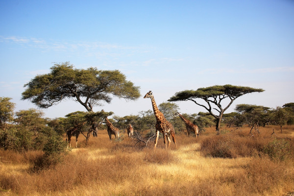
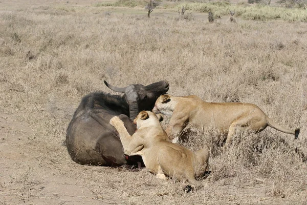
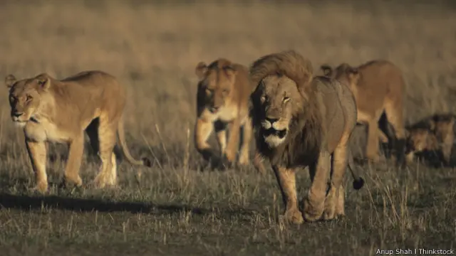

Os leões vivem em savanas na África e em uma reserva natural na Índia, eles costuman viver em grupos familiares chamados alcateias, as alcateias são formadas em sua maioria por femeas e seus filhos e algunspoucos machos dominantes que pretegem ogrupo.

Os leões são animais car nivoro que se alimentão de animais de médio e grande porte, na maior parte das vezes eles cação zebra, gnus e antílopes.
A caça é feita principlamente pelas leoas e em grupos, os grupos de caça dos leões costuman utilizar técnicas de enboscada e cerco à noite para rcompensar a falta de resistencia em corri das longas.

O leao é o segundo maior felino do mundo, eles possuem um corpo muito forte e musculoso coberto de uma pelagem amarelada e forte dimorfismo sexual.
Os leões machos possuem cerca da 150 a 200 Kg e possui uma juba marcante, emquanto as fêmeas são menores possuem cerca de 180 a 200 Kg e sem juba, eles possuem garras retrateis e mandíbulas muito poderosas.
| nome | turma | curso |
|---|---|---|
| Davi Ribeiro | 1º ano E.M | Informatica |
| Iago Auves | 1º ano E.M | Informatica |
| Vinícius Hemrique | 1º ano E.M | Informatica |